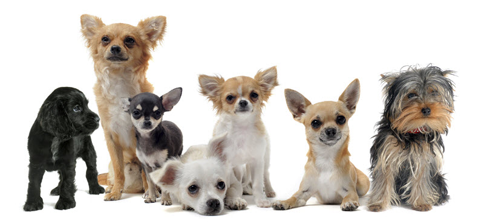
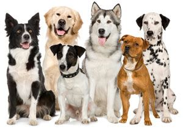

SMALL TO MEDIUM DOG BREEDS (HDB APPROVED)
Small to medium dogs are very popular family dogs and city dogs because they have less energy than the toy group, are big enough for kids to play with, but don't take up much space or need huge areas for exercise. They would be happy living in this kinds of environments, hence making them a good choice if you live in an apartment or tiny home. However, just because they're smaller doesn't mean they don't need their room to exercise their little legs. They often have pent up energy and a nice dog park or walking trail is perfect to help them get their exercise if you don't have a backyard to let them play in. Small dogs also tend to eat less and their basic care costs less as compared to a large breed. They shed less (in total amount of fur that is) and tend to make fewer (or at least smaller) messes than large dogs, and are also easier to control on a leash or by carrying. Just think—would you rather restrain a 20-pound pup or an 80-pound giant trying to run after a squirrel?
LARGER BREED DOGS
However, if you're wondering whether we have bigger dogs...
Don't worry. We've got them. Big dogs are easier to train, especially when you start training them since young, large-breed dogs can learn quickly and easily. They tend to have better manners than little nippers, which may be due to the way humans treat them. Large dogs also tend to bond with their owners quickly and are easy to train. Although some breeds are easier to train, larger dogs tend to be more compliant than small dogs. Big dogs also make excellent guard dogs. In addition, smaller dogs are significantly more fearful and anxious. These results seem to confirm the stereotypes about small dogs, namely that they are less obedient, more excitable and aggressive, and more prone to anxiety and fearfulness.
